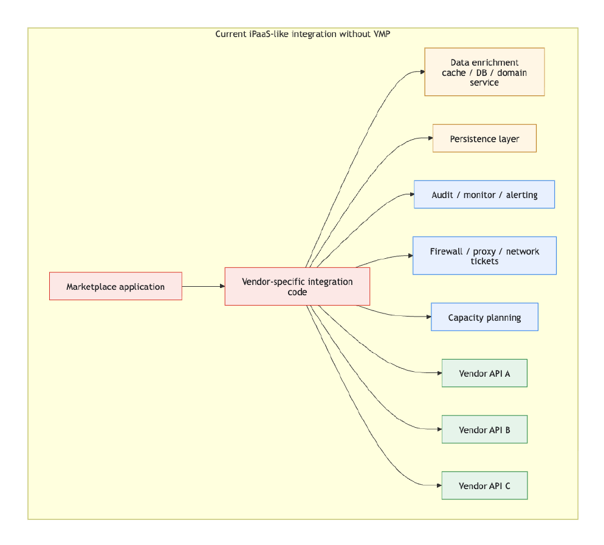
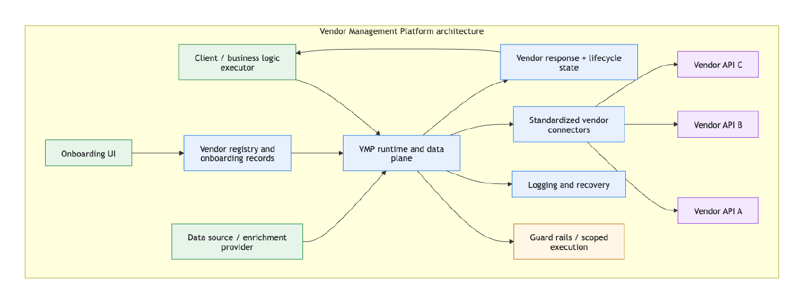
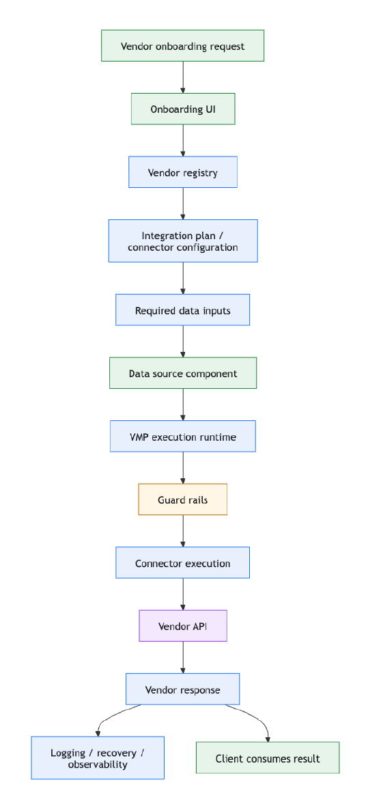

Inside the Vendor Management Platform's Architecture
Abstract
This technical report adapts the LinkedIn article Inside the Vendor Management Platform's Architecture into a Scholar-ready format. It describes how eBay approached vendor integration at scale by introducing a Vendor Management Platform (VMP) to standardize onboarding, vendor metadata, connector patterns, and lifecycle operations across more than 50 payment and risk vendors. The report contrasts a code-heavy, iPaaS-like current state with a bottom-up VMP architecture centered on connector standardization, controlled execution, guard rails, and reusable platform services.
Keywords: vendor management platform, enterprise integration, digital commerce, API integration, iPaaS, observability, vendor onboarding, dependency injection
Author note: This technical report adapts the LinkedIn article Inside the Vendor Management Platform's Architecture, published October 30, 2024, into a Scholar-ready archival format. The figures in this web version are extracted from the accompanying report assets.
1. The Challenge in Digital Commerce
Marketplaces rely on essential vendor integrations, varying from a few to dozens, depending on size and scope. A small domestic marketplace might suffice with one payment gateway and a couple of risk tools, while a larger international one may require multiple gateways, along with risk management, compliance, AML, and sanctions screening tools. At eBay, the platform integrates with more than 50 vendors to manage payments and risk operations.
Historically, dispersed vendor management across platforms or departments led to complex infrastructure, duplication, limited standardization, and unnecessary cost. The attached report argues that organizations should treat this as a platform problem, not a sequence of one-off integrations.
2. Introducing the Vendor Management Platform (VMP)
To address those inefficiencies, eBay introduced the Vendor Management Platform (VMP) as a centralized hub for vendor assessment, onboarding, integration planning, metadata management, and lifecycle operations. The initial focus is API-based integrations, with the goal of simplifying onboarding, improving issue detection and resolution, and reducing operational cost for both eBay and its vendors.
3. Integration Types
API integrations typically require significant custom code for enrichment, persistence, observability, security, and capacity planning. The report contrasts this with the VMP approach, which standardizes the API integration path and reduces repeated engineering work for each new vendor.
4. Understanding Vendor Integrations
Before VMP, each vendor integration often required bespoke work for API calls, cache or database enrichment, persistence design, monitoring, audit hooks, network setup, and downstream capacity analysis. That pattern made integrations code-heavy and hard to standardize, especially when multiple applications depended on the same vendor.

5. iPaaS vs VMP
Integration Platform as a Service (iPaaS) typically follows a top-down approach, focusing on integrating disparate systems at a high level without enforcing standardization at the registry and data sink levels. VMP takes the opposite direction: a bottom-up approach that standardizes connectors and dynamically assembles the right dependencies and configurations for each vendor within predefined platform standards.
This bottom-up design yields a cleaner and more maintainable integration landscape because new vendors can be introduced or modified without broad reconfiguration of the surrounding system.
6. Comparative Analysis
VMP lets vendor-specific requirements drive the dynamic assembly and injection of dependencies, fostering a modular and scalable integration ecosystem. By standardizing connectors and decoupling execution logic from runtimes, the platform improves reliability, observability, and scalability relative to inconsistent iPaaS-like integration patterns.
7. High-Level Design
At its core, VMP acts as the operational hub for vendor onboarding, controlled execution, logging, and recovery. The client component retains business logic, the data-source component supplies required inputs, and guard rails constrain VMP so it remains focused on vendor lifecycle execution rather than absorbing unrelated business logic.


8. Conclusion
The VMP architecture is intended to make vendor integration more standardized, scalable, and observable by centralizing onboarding, normalizing connectors, and separating business logic from vendor lifecycle execution. The broader claim is that organizations should stop treating each vendor integration as a bespoke engineering project and instead build a governed platform beneath the business workflow.
References
- Sundar, N., Morabia, T., Rangarajan, H., Shrivastava, P., & Srinivasan, J. (2024, October 30). Inside the Vendor Management Platform's Architecture. LinkedIn.